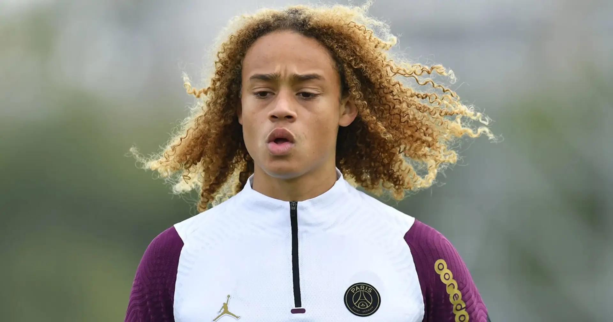
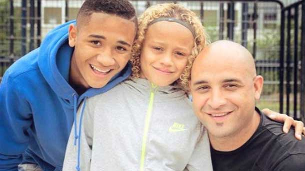
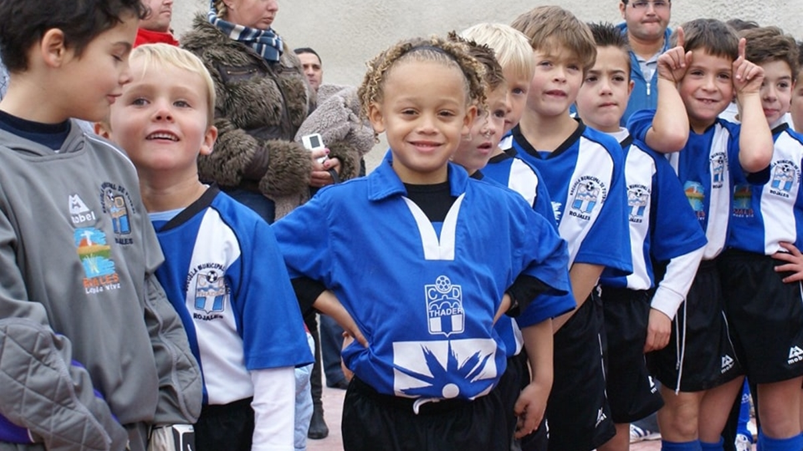
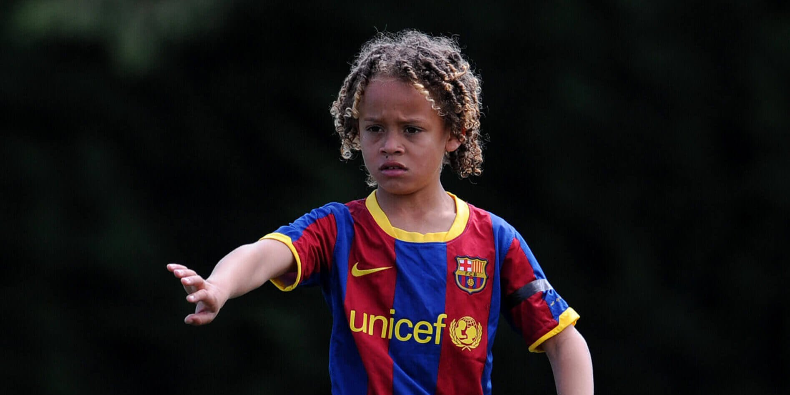
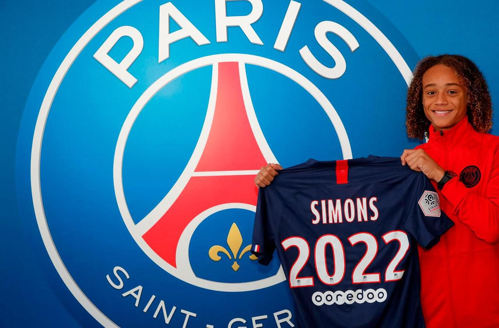
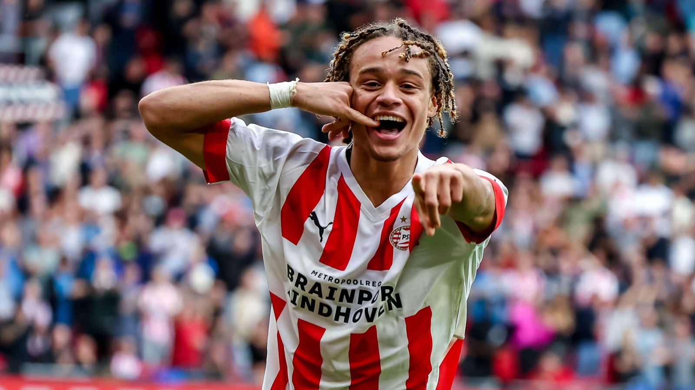
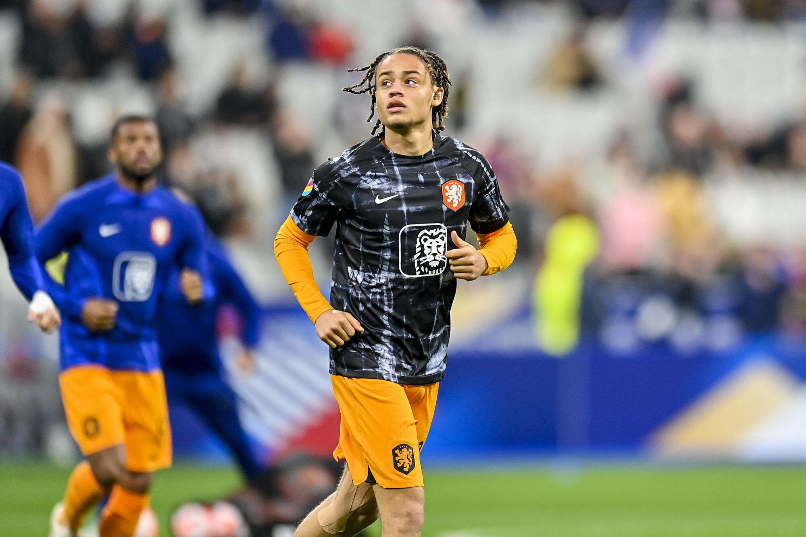

Xavi Quentin Shay Simons, alias Xavi Simons, est un footballeur international néerlandais (il est également surinamais par la descendance de son père) né le 21 avril 2003 à Amsterdam. Son père, Regillio Simons (ancien joueur du Fortuna Sittard), l'a nommé Xavi en raison de l'admiration qu'il porte à Xavi Hernández. il est actuellement prêté au RB Leipzig par le PSG.
Le père de Xavi Simons est donc Regillio Simons, ancien joueur de football professionnel et entraîneur, et sa mère est Peguy Simons. Xavi Simons a un frère aîné, Faustino Simons, né le même jour que lui mais 7 ans auparavant, le 21 juillet 1997.
En 2008, à l'âge de 5 ans, Xavi Simons est inscrit au CD Tháder par son père, très investi dans sa jeune carrière. À 6 ans, il attire l'attention de Villareal, mais son père, Regillio, était réticent à le laisser partir si jeune dans un internat de football situé à 280 kilomètres de chez eux. Quelques mois plus tard, seulement 2 ans après son arrivée au CD Tháder, Xavi Simons se fait remarquer par le FC Barcelone, qui aide Xavi Simons et sa famille à trouver une nouvelle maison.
En 2010, Xavi Simons rejoint l'académie de la Masia, le célèbre centre de formation du FC Barcelone réputé pour avoir formé Lionel Messi et Andrés Iniesta. Dès son arrivée, Xavi Simons se fait très vite remarquer par le monde entier grâce notamment à ses incroyables compétences techniques.
Il devient alors l'un des joueurs les plus prometteurs de sa génération. Lors de la saison 2016-2017, en tant que capitaine de l'équipe U14 de Barcelone, il contribue grandement au succès de son équipe, invaincue avec 164 buts marqués pour 14 encaissés. Il reçoit le prix du meilleur joueur et est considéré comme l'héritier de Xavi Hernández à Barcelone. À l'issue de cette saison, il se fait remarquer par Chelsea et le Real Madrid qui tentent de le recruter. C'est en 2019 que Xavi Simons et le FC Barcelone se séparent à l'issue d'un désaccord contractuel.
Le 23 juillet 2019, à l'âge de 16 ans, Xavi Simons signe son premier contrat professionnel avec le Paris Saint-Germain avec à la clé un salaire de 1 million d'euros par an. Il signe un contrat jusqu'en 2022.
Deux ans plus tard, le 10 février 2021, Xavi Simons fait ses débuts professionnels avec le PSG en Coupe de France face à Caen lors de la victoire 1-0, en remplaçant Julian Draxler à la 78ème minute. Deux mois plus tard, le 10 avril 2021, Xavi Simons fait ses débuts en Ligue 1 face à Strasbourg lors de la victoire 4-1, en remplaçant Ander Herrera à la 89ème minute.
À l'issue de cette saison, le 19 mai 2021, Xavi Simons remporte son premier trophée professionnel : la Coupe de France.
La saison suivante, Xavi Simons connaît sa première titularisation avec le PSG contre l'Entente Feignies-Aulnoye en Coupe de France. Pour sa deuxième titularisation en Coupe de France, cette fois contre Vannes, Xavi Simons délivre sa première passe décisive à Kylian Mbappé, participant ainsi à la victoire 4-0 du PSG. Parallèlement, Xavi Simons joue également avec les jeunes du PSG et est l'un des artisans de la belle saison des jeunes du PSG en Youth League, car il est décisif dans 6 des 7 matchs auxquels il participe. Il qualifie le PSG en quart de finale, bien qu'il ne puisse pas y participer en raison d'une suspension.
À l'issue de cette saison, Xavi Simons et le PSG se séparent malgré le désir de prolongation des deux parties.
Le 29 juin 2022, Xavi Simons s'engage avec le PSV Eindhoven pour une durée de 5 ans. Pour son premier match officiel, il entre à la 73ème minute et clôt le match avec un but à la 90+1, scellant ainsi l'issue du match. Le PSV l'emporte 5-3 contre l'Ajax et remporte la Johan Cruijff Schaal.
Le 30 avril 2023, après une magnifique saison, il remporte la finale de la Coupe des Pays-Bas contre l’Ajax Amsterdam à l’issue des tirs au but.
Xavi Simons réalise une saison exceptionnelle, étant décisif à 33 reprises en 48 matchs. Il convainc alors le PSG de lever son option de rachat de 6 millions d'euros. Il signe un contrat de 4 ans et est ensuite directement prêté au RB Leipzig.
Pour ses 3 premiers matchs de Bundesliga, Xavi Simons est décisif à 5 reprises : 2 buts et 3 passes décisives.
Il marque son premier but en Ligue des champions lors de son 3ème match, contre l'Étoile Rouge de Belgrade, d'une frappe lointaine à la 59ème minute.
Xavi Simons a porté les couleurs de l'équipe nationale des Pays-Bas dans les catégories des moins de 15, 16, 17 et 19. Tout au long de son parcours international, il a disputé un total de 20 matchs, marquant sept buts et délivrant trois passes décisives.
Le 11 novembre 2022, Xavi a été convoqué par le sélectionneur néerlandais Louis van Gaal pour rejoindre l'équipe nationale lors de la Coupe du monde 2022 au Qatar. Cet événement marquant a été le début d'une nouvelle ère pour Xavi, où il a eu l'honneur de représenter son pays à la plus haute scène du football mondial.
Le 3 décembre 2022, Xavi Simons a honoré sa première sélection avec les Pays-Bas lors du huitième de finale contre les États-Unis, remplaçant Memphis Depay à la 83e minute. Cette entrée en jeu a été un moment inoubliable pour Xavi, marquant le début de sa contribution à l'histoire du football néerlandais.
Malgré une performance remarquable, les Néerlandais ont été éliminés en quart de finale contre l'Argentine, dans un match intense qui s'est conclu sur un score de 2-2, avec une défaite aux tirs au but (3-4). Bien que la compétition se soit terminée par une déception, cette expérience a été précieuse pour Xavi Simons, renforçant son engagement envers l'équipe nationale et lui donnant l'ambition de revenir encore plus fort dans les prochaines compétitions internationales.
Lors de son 14ème match, le 10 juin 2024, il marque son premier but avec les Pays-Bas et participe à la victoire 4-0 des Oranjes en match de préparation à l'Euro 2024
Exactement un mois plus tard, Xavi Simons marque son premier but en compétition officiel avec les Oranjes ! C'était pendant la Demi-finale de l'Euro 2024, Xavi Simons inscrit le premier but du match lors de la défaite 1-2 des Pays-Bas, C'était le 10 Juillet 2024
Voici un grand tableau récapitulant le parcours junior, le parcours professionnel ainsi que le parcours en sélection nationale de Xavi Simons. Pour tous ces parcours, à l'exception de celui en junior, vous pouvez trouver le nombre de matchs, de buts ainsi que de passes décisives de Xavi Simons pour chaque passage.
| PARCOURS JUNIOR | ||||
|---|---|---|---|---|
| Années | Club | |||
| 2008-2010 | CD Thader | |||
| 2010-2019 | FC Barcelone | |||
| 2019-2020 | Paris Saint-Germain | |||
| PARCOURS PROFESSIONNEL | ||||
| Années | Club | Matchs | Buts | Passes D |
| 2020-2022 | Paris Saint-Germain | 11 | 0 | 1 |
| 2022-2023 | PSV Eindhoven | 48 | 22 | 12 |
| 2023- | Paris Saint-Germain | 0 | - | - |
| 2023-2024 | → RB Leipzig | 43 | 10 | 15 |
| 2024-2025 | → RB Leipzig | 1 | 1 | 1 |
| SÉLECTION NATIONALE | ||||
| Années | Club | Matchs | Buts | Passes D |
| 2018 | Pays-Bas U15 | 5 | 1 | 0 |
| 2019 | Pays-Bas U16 | 3 | 0 | 0 |
| 2019 | Pays-Bas U17 | 6 | 3 | 1 |
| 2021 | Pays-Bas U19 | 6 | 3 | 2 |
| 2022 | Pays-Bas Espoir | 2 | 0 | 0 |
| 2022- | Pays-Bas | 20 | 2 | 3 |
Pour ses 3 premiers matchs de Bundesliga, Xavi Simons est décisif à 5 reprises : 2 buts et 3 passes décisives.
Il marque son premier but en Ligue des champions lors de son 3ème match, contre l'Étoile Rouge de Belgrade, d'une frappe lointaine à la 59ème minute.